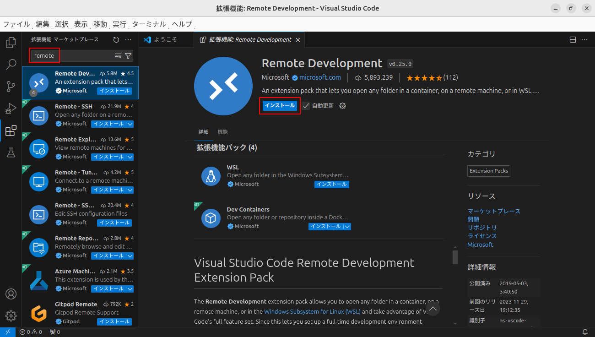
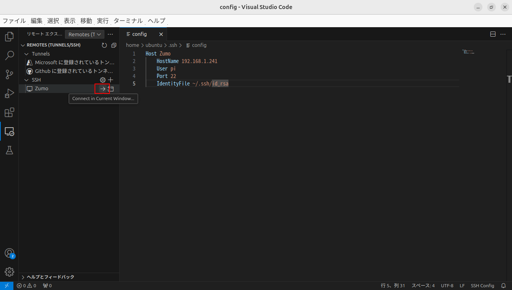
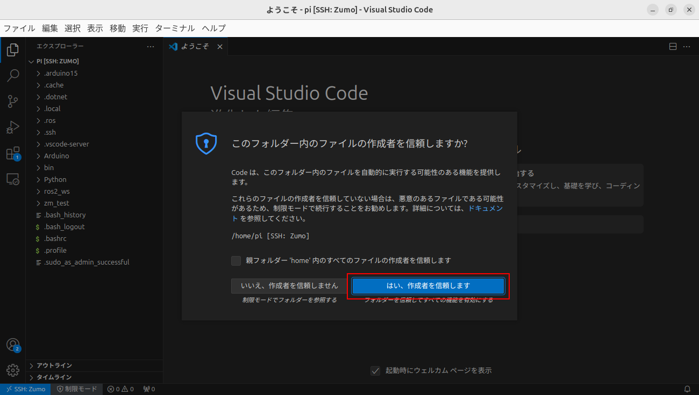

15. VSCode¶
【Linux】Ubuntu22.04 LTSにVisual Studio Codeをインストール を参考にしました。
Visual Studio Code（VSCode）は、Microsoft社が提供する定番の開発用エディタです。 ここまでnanoエディタを使ってきましたが、WindowsやMacに慣れた人には使いにくと思いますので、 VSCodeで開発できるよう環境を構築します。
15.1. VSCodeのインストール¶
Ubuntu Desktop 24.04 LTSのディスクイメージを 公式HP の手順に従ってインストールします。
[.deb Debian, Ubuntu…]と書かれたリンクをクリック。 ファイルはDownloadsディレクトリに保存される。
Downloadsディレクトリへ移動。
ubuntu@mbc112:~$ cd Downloads/
ダウンロードしたファイルを確認。
ubuntu@mbc112:~/Downloads$ ls
code_1.92.0-1722473020_amd64.deb
VSCodeをインストール。
ubuntu@mbc112:~/Downloads$ sudo apt install ./code_1.92.0-1722473020_amd64.deb
VSCodeを起動。

15.2. 拡張機能のインストール¶
次の拡張機能をインストールします。
Japanese Language Pack for Visual Studio Code（日本語化）
Python
Remote Development（ssh接続）
左側のタブから拡張機能を選択、japanで検索してJapanese Language Pack for Visual Studio Codeをインストール。

VSCodeを再起動。

再起動後、日本語表示になる。

pythonで検索してPythonをインストール。

remoteで検索してRemote Developmentをインストール。
15.3. 鍵の設定¶
公開鍵と秘密鍵のペアを作成。
ubuntu@mbc112:~$ ssh-keygen -t rsa
Generating public/private rsa key pair.
Enter file in which to save the key (/home/ubuntu/.ssh/id_rsa):
Enter passphrase (empty for no passphrase):
Enter same passphrase again:
Your identification has been saved in /home/ubuntu/.ssh/id_rsa
Your public key has been saved in /home/ubuntu/.ssh/id_rsa.pub
The key fingerprint is:
SHA256:1BucBuftMB0sm6bLahuOhof1/yCR2ldQo24oDnNZm8A ubuntu@mbc112
The key's randomart image is:
+---[RSA 3072]----+
| . +.. |
| . O.=.. |
| E . + X+o |
| + B o+* |
| o + * Soo . |
| =.+ o.. |
| +o.+.o. |
| o ooo+o. |
| o..++... |
+----[SHA256]-----+
id_rsaとid_rsa.pub（鍵のペア）が作成された。
ubuntu@mbc112:~$ ls .ssh
authorized_keys id_rsa id_rsa.pub
d_rsa.pubをRaspberry Piにコピー。
ubuntu@mbc112:~$ scp .ssh/id_rsa.pub pi@192.168.1.241:
The authenticity of host '192.168.1.241 (192.168.1.241)' can't be established.
ED25519 key fingerprint is SHA256:P58ZZjn4tjnmRVCyFi1gGV5MHmTtZQzfwCyUaSr460g.
This key is not known by any other names.
Are you sure you want to continue connecting (yes/no/[fingerprint])? yes
Warning: Permanently added '192.168.1.241' (ED25519) to the list of known hosts.
pi@192.168.1.241's password:
id_rsa.pub 100% 567 170.3KB/s 00:00
コピーしたid_rsa.pubはRaspberry Piのホームディレクトリにある。
pi@zumo01:~$ ls
Arduino Python bin id_rsa.pub ros2_ws zm_test
これを「.ssh」ディレクトリの中に「authrized_keys」という名前で保存。
pi@zumo01:~$ cat id_rsa.pub >> .ssh/authorized_keys
.sshディレクトリの権限を変更。
pi@zumo01:~$ chmod 700 .ssh
.ssh/authorized_keysの権限を変更。
pi@zumo01:~$ chmod 600 .ssh/authorized_keys
id_rsa.pubを削除。
pi@zumo01:~$ rm id_rsa.pub
sshd_configファイルを開く。
pi@zumo01:~$ sudo nano /etc/ssh/sshd_config
#（コメント）を外して次のように設定。 ( )は行数を表す。
(14)Port 22
(33)PermitRootLogin no
(37)RSAAuthentication yes
(38)PubkeyAuthentication yes
(41)AuthorizedKeysFile .ssh/authorized_keys
(57)PasswordAuthentication no
SSHサーバを再起動。
pi@zumo01:~$ sudo /etc/init.d/ssh restart
Restarting ssh (via systemctl): ssh.service.
これで、パスワード認証は無効、鍵ファイルで接続できるようになった。
鍵ファイルで接続できるかテスト。
ubuntu@mbc112:~$ ssh -i .ssh/id_rsa -p 22 pi@192.168.1.241
Welcome to Ubuntu 24.04 LTS (GNU/Linux 6.8.0-1008-raspi aarch64)
* Documentation: https://help.ubuntu.com
* Management: https://landscape.canonical.com
* Support: https://ubuntu.com/pro
System information as of Tue Aug 6 15:36:35 JST 2024
System load: 0.0 Temperature: 59.5 C
Usage of /: 16.3% of 28.51GB Processes: 144
Memory usage: 2% Users logged in: 1
Swap usage: 0% IPv4 address for wlan0: 192.168.1.241
* Strictly confined Kubernetes makes edge and IoT secure. Learn how MicroK8s
just raised the bar for easy, resilient and secure K8s cluster deployment.
https://ubuntu.com/engage/secure-kubernetes-at-the-edge
Expanded Security Maintenance for Applications is not enabled.
60 updates can be applied immediately.
To see these additional updates run: apt list --upgradable
11 additional security updates can be applied with ESM Apps.
Learn more about enabling ESM Apps service at https://ubuntu.com/esm
Last login: Tue Aug 6 15:17:14 2024 from 192.168.1.26
15.4. SSH接続¶
左側のタブからリモートエクスプローラを選択。

Remotes(Tunnels/SSH)を選択。

SSHの右側にある歯車をクリック。

/home/ubuntu/.ssh/configを選択。

configファイルが表示される。

編集。
Host Zumo
HostName 192.168.1.250
User pi
Port 22
IdentityFile ~/.ssh/id_rsa

更新する。
Zumoが表示される。

Zumoの右側にある矢印をクリック。
Raspberry Piと接続された。

「フォルダー開く」をクリックして、home/pi/を選択。

「はい、作成者を信頼します」をクリック。
Raspberry Piのディレクトリやファイルが見られるようになった。